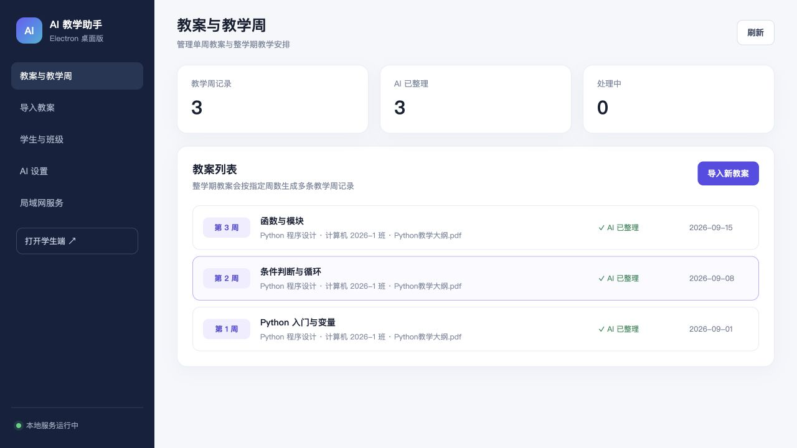

从整学期规划到每周执行
- 单周 / 整学期教案导入与拆分
- Markdown 与 LaTeX 教学内容渲染
- 按题型、题量、难度生成 AI 题库
- 签到、完成率与知识点掌握图表
- AI 班级学情报告与个体学习诊断
导入 PDF、Word 或 Markdown。AI 教学助手会按教学周组织内容，连接教师备课、题目发放、学生签到、AI 批改与班级学情分析。

所有功能围绕真实教学节奏组织，不需要在多个零散工具之间来回切换。
签到、作答与题目知识点被放进同一个分析视图。教师可按课程、班级和教学周筛选，快速找到低完成率、薄弱知识点和需要跟进的学生。
AI 建议 下周先用分层例题复习函数单调性，并优先跟进 6 名低完成率学生。
数据口径透明：未作答影响完成率，但不会被当作答错；知识点掌握度只基于实际作答，并显示样本量。
接受 PDF、DOCX 与 Markdown，可指定一个教学周或整个学期。
按周生成目标、重点难点、教学流程、活动、练习与资源建议。
老师预览、调整并发布题目和资料，始终保留最终决定权。
学生签到与作答，系统沉淀记录并形成个性化诊断。
应用在本机启动 Node.js 局域网服务。学生通过同一网络中的浏览器进入，课程、名单、提交与签到保存在教师电脑；API Key 使用 AES-256-GCM 加密。
正式版本通过 GitHub Releases 发布，macOS 版本签名并经 Apple 公证。
Universal DMG · Apple Silicon + Intel
EXE · 安装版与便携版
DEB · AppImage
RPM
开源发布 · 可审计 · 可自托管 github.com/bennix/AiTeaching ↗